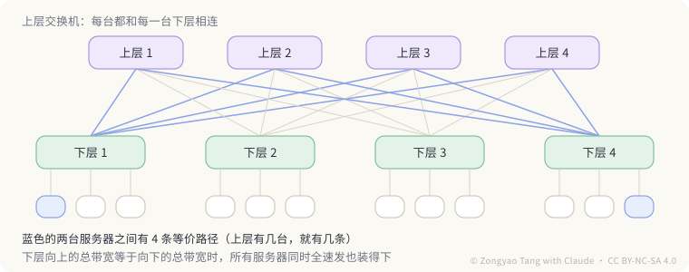
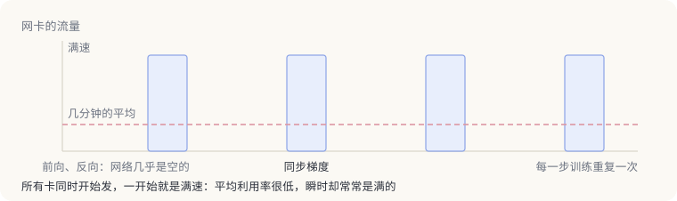
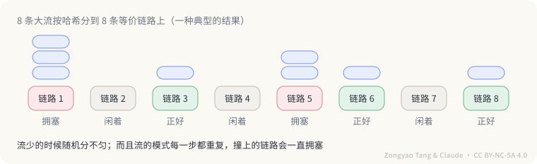

线索是：训练集群其实有两张互不相干的网 → 后端那张用很多小交换机搭成“任意两点之间不收窄”的形状 → 跑在上面的训练流量，和普通数据中心的流量性格完全不同 → 这种性格让传统的选路办法失灵 → 而“不丢包”又带来一个副作用：拥塞会传染。这一单元以 Meta 公开的经验为主线，它是目前讲得最清楚的一手资料。
第 5 部分 · 高速互联5.3 集群网络：拓扑、流量与拥塞
这一单元回答几百上千张卡之间的网络是什么形状？训练的流量有什么特点？
承接 5.1（机内）和 5.2（一条链路上的 RDMA）：这一单元把视野放大到整个集群。
- 训练集群有两张网：前端管数据和管理，后端只跑 GPU 之间的 RDMA
- Clos 拓扑：用很多小交换机，搭出任意两点之间不收窄的网
- 训练的流量：流很少，每条极大，同时爆发，周期重复
- 按哈希选路遇上少量大流：几条流会撞在同一条链路上
- 不丢包的代价：拥塞会沿着链路往回传，一处慢会拖慢一片
讲解
1训练集群有两张网：前端管数据和管理，后端只跑 GPU 之间的 RDMA
一台训练服务器同时接入两张互不相干的网络。前端网络是普通的以太网，负责读数据、写检查点、登录和监控。后端网络把所有服务器上的 RDMA 网卡连在一起，只承载 GPU 之间的集合通信。
把 0.1 的管道按“数据走哪张网”重新标一遍：
- 第 1 步，从存储读数据：前端。
- 第 5 步，多机之间同步梯度：后端。
- 写检查点、拉镜像、收集日志和监控指标：前端。
Meta 在论文里把分开这两张网称为部署训练网络时最早、也最重要的一个决定。理由有三个：
- 需求不同。 后端要的是极高的带宽、极低的延迟和不丢包；前端是通用的数据中心网络，要的是灵活和兼容。把两种需求放在一张网上，哪边都做不好。
- 演进节奏不同。 GPU 每一代对后端带宽的要求都在涨，后端要能单独升级，不牵动整个数据中心。
- 互不干扰。 训练流量是突发的大流量（下面会讲），混在一起会冲击别的业务；反过来，别的流量也会扰动训练。
在机器上看，就是有两组网卡：一两块普通网卡接前端，若干块 RDMA 网卡（常见的是每一两张 GPU 配一块）接后端。NCCL 的环境变量也对应这两张网：建立连接时用的那条普通 TCP 连接走哪个接口，由
NCCL_SOCKET_IFNAME控制；真正传数据用哪些 RDMA 网卡，由NCCL_IB_HCA控制。多网卡的机器上，这两个设置选错是初始化卡住的常见原因。打个比方像一家医院：门诊大厅人来人往（前端），手术区另有一套独立的通道（后端），不许别的人流进来干扰。
所以排查时要先分清问题在哪张网上：数据读得慢、检查点写得慢，是前端或存储的问题；梯度同步慢，是后端的问题。两张网的设备、协议、负责的人往往都不同。
出处Meta RoCE 论文 第 4 页 前端与后端网络Meta RoCE 论文 第 5 页 §3.4 分开两张网的理由- 后端这张网具体是什么形状？它要满足一个苛刻的条件：任意两台机器之间都要一样快。
2Clos 拓扑：用很多小交换机，搭出任意两点之间不收窄的网
没有哪一台交换机有几千个高速端口。办法是用两层（或三层）小交换机：下层每台接一组服务器，上层每台和所有下层交换机相连。只要上行的总带宽不小于下行的总带宽，任意两台服务器之间就有很多条等宽的路可选，整张网相当于一台巨大的、不堵的交换机。
结构。 以两层为例：
- 下层交换机（常叫 leaf，Meta 叫机架交换机）：每台的一半端口向下接服务器的网卡，另一半端口向上。
- 上层交换机（常叫 spine）：每台都和每一台下层交换机相连。
两台接在不同下层交换机上的服务器通信时，路径是“上去，再下来”：源服务器 → 下层 → 某一台上层 → 另一台下层 → 目的服务器。有几台上层交换机，就有几条这样的路，它们长度相同、带宽相同，所以叫等价路径。

两层的例子：4 台上层，4 台下层 不收窄。 如果每台下层交换机向上的总带宽等于向下的总带宽（比如 16 个口接服务器、16 个口接上层），那么即使它下面所有服务器同时全速往外发，上行也装得下。这叫 1 比 1，也叫无阻塞。训练的后端网络通常按这个标准建，因为集合通信时确实会出现“所有卡同时全速收发”。
范围有限。 两层 Clos 能连接的服务器数量受交换机端口数限制。要把更多机器连进来，就得再加一层。Meta 的做法是把一组两层 Clos 称为一个“区”，区内不收窄；区与区之间再用一层交换机相连，这一层是有意收窄的。
对调度的影响。 于是“一个作业的机器被分配在哪”变得重要：
- 都在同一台下层交换机下：只需一跳，最好。
- 在同一个区内：有足够的等价路径，带宽有保证。
- 跨区：要挤收窄的那一层。Meta 为此让作业调度器了解拓扑，切分作业时尽量让跨区的流量最少。
这就是第 8 部分讲“拓扑感知调度”的由来：调度器把卡放在哪里，直接决定了这个作业的通信走哪些链路。
打个比方像城市路网：每个小区（下层交换机）有好几个出口，分别通向不同的主干道（上层交换机）。从任何小区到任何小区，都有好几条同样快的路线。
所以后端网络的关键指标是“收敛比”：上行带宽和下行带宽之比。1 比 1 才是不收窄的；一旦上行不够（跨更大范围时常常如此），作业被分配到的机器离得越远，可用带宽就越少。
出处Meta RoCE 论文 第 5 页 后端网络的拓扑与跨区连接- 形状有了。再看跑在这张网上的流量，它的性格和普通数据中心完全不同。
3训练的流量：流很少，每条极大，同时爆发，周期重复
普通数据中心里有成千上万条大小不一、各走各的流。训练集群正相反：每块网卡只和少数几个对象通信，每条流都能冲到网卡的满速；所有卡在同步梯度的那一刻一起发，算下一步时又一起停。
Meta 的论文把训练流量的特点归结为三条。
一、熵低：流少，而且总是那几条。 “流”指的是一对端点之间的一串包（由源地址、目的地址、端口等区分）。集合通信的对象是固定的：环形 all-reduce 里，每张卡只和环上的邻居说话。所以每块网卡上只有寥寥几条流，而且每一步训练都重复同样的模式。
二、突发：在毫秒的尺度上时有时无。 一步训练里，前向和大部分反向期间网络几乎是空的；到了同步的时候，所有卡同时开始发。这个“开、关”的周期就是一个训练步，通常是几十到几百毫秒。
三、大象流：每一次爆发都能冲到网卡的满速。 没有“慢慢加速”的过程，一开始就是满速。

几步训练里一块网卡上的流量 把这三条合起来看它对网络的意义：
- 负载均衡靠不上“大数定律”。有一万条小流时，随机分配也能分得很均匀；只有十几条大流时，随机分配很容易严重不均（下一节）。
- 拥塞来得又快又猛。传统的拥塞控制靠“试探，发现拥塞，退让”，而这里的流量一出现就是满速，还没来得及调整，这一波就结束了。
- 同步性放大了一切。所有卡同时发，意味着网络要么全空，要么处处满载。平均利用率看起来很低，瞬时却常常是满的。
这一条和 0.2 讲的“平均值会骗人”是同一个道理：看五分钟平均的网络利用率，完全看不出训练时网络是否成了瓶颈。
打个比方普通流量像白天的城市交通：车多、方向分散、此起彼伏。训练流量像一场演唱会散场：没几个出口，所有人在同一刻涌向它们，过一会儿又空无一人。
所以为普通流量设计的网络机制（靠大量小流的统计平均来均衡负载、靠逐渐试探来控制拥塞），到了训练集群上都要重新审视。
后面会用到 按哈希选路遇上少量大流：几条流会撞在同一条链路上出处Meta RoCE 论文 第 3 页 流量模式的低熵Meta RoCE 论文 第 5 页 §4 低熵、突发与大象流- 很多条等价的路，加上很少的几条大流。这两件事碰到一起，就出了问题。
4按哈希选路遇上少量大流：几条流会撞在同一条链路上
等价路径之间怎么分配流量？以太网的传统做法（ECMP）是对每条流的地址和端口算一个哈希值，按它选一条路。流很多时分得很均匀；只有十几条大流时，很可能有几条被分到同一条链路上，那条链路挤爆，旁边的链路却空着。
ECMP 怎么选。 交换机收到一个包，取出它的五元组（源和目的地址、源和目的端口、协议）算哈希，哈希值决定走哪一条等价路径。同一条流的包哈希相同，永远走同一条路，这保证了包不乱序。不同的流大概率分到不同的路上。
为什么在这里失灵。 “大概率”需要流足够多。把 16 条大流随机分到 16 条链路上，恰好一条一个的概率微乎其微，几乎一定会有链路摊上两三条，同时有链路闲着。被撞上的那条链路要承载两三倍于自己容量的流量，结果是持续的拥塞。而流的模式每一步都重复，所以这种拥塞不是偶尔出现，而是一直在那里。Meta 的论文把这称为哈希碰撞，并用模拟和线上数据说明了它的严重程度。

有的链路摊上两三条，有的闲着 办法一：让流变多。 既然问题是流太少，那就把一条逻辑连接拆到多个 QP 上。每个 QP 的端口号不同，在网络看来就是不同的流，会被哈希到不同的路上。NCCL 的环境变量
NCCL_IB_QPS_PER_CONNECTION就是做这件事的，官方文档对它的说明正是“在多层的网络上增加选路的多样性”。Meta 把它和改进过的 ECMP 配合使用。办法二：不按哈希，按负载。 让交换机根据各条路的实时拥挤程度为包选路，这叫自适应路由。它能分得更匀，但同一条流的包可能走不同的路、乱序到达，需要网卡和上层协议配合。InfiniBand 支持自适应路由，NCCL 在 InfiniBand 上默认启用与它配合的传输方式。
办法三：集中规划。 由一个控制器掌握全网的拓扑和每个作业的流量，直接为大流指定路径。Meta 在一部分集群里这样做。
办法四：让大多数流量不需要选路。 这就是“按轨布线”：每台服务器有若干块网卡，把所有服务器的第 1 块网卡接到同一台（或同一组）下层交换机，第 2 块接到另一台，依此类推。每一组这样的网卡叫一条“轨”。只要通信双方用同一条轨上的网卡，流量在下层交换机上一跳就到，根本不上行。NCCL 的
NCCL_CROSS_NIC控制的正是这件事：默认优先让两端用同一编号的网卡，避免跨轨。打个比方像只有 16 个收费口，却让每辆车按车牌尾号选口：来一万辆小车，各口差不多；只来 16 辆大货车，几乎肯定有的口排着两三辆，有的口一辆都没有。
所以训练网络要么增加流的数量让哈希分得开，要么不靠哈希、按实时负载选路。NCCL 里有对应的开关；InfiniBand 则有自适应路由。
出处Meta RoCE 论文 第 5 页 §4.1 ECMP 的问题与哈希碰撞Meta RoCE 论文 第 6 页 增强 ECMP 与 QP 扩展Demystifying NCCL 第 5 页 每个对端多条 QP 的做法NCCL 环境变量：NCCL_IB_QPS_PER_CONNECTION、NCCL_CROSS_NIC- 撞车造成了拥塞。在一张不丢包的网里，拥塞还有一个特别的后果。
5不丢包的代价：拥塞会沿着链路往回传，一处慢会拖慢一片
不丢包的网络在拥塞时不是丢弃数据，而是让上游停下来等（InfiniBand 的信用用完，或者以太网的 PFC 暂停）。上游的缓冲区满了，又会让它的上游停下。于是一个拥堵点、一条降速的链路、一个收得慢的节点，影响会一层层往回扩散。
反压怎么扩散。 设想交换机 B 的一个出口拥塞了，要从这个出口出去的包在 B 里排队。B 的缓冲区快满时，它让上游 A 暂停。注意暂停的粒度：A 被暂停的是“发往 B 的这一类流量”，其中既有要去拥塞出口的，也有要去 B 的其他出口的。后者明明前面是畅通的，却被一起拦住了。这叫队头阻塞。A 的缓冲区随后也会变满，再去暂停它的上游，范围越来越大。
拥塞控制想解决的就是这个。 5.2 说的 ECN 加 DCQCN，目的是在缓冲区还没满、还没触发暂停的时候，就让发送方慢下来。但它对训练流量并不好调：流量一出现就是满速，持续时间又短。Meta 在论文里讲了他们的经历：反复调整 DCQCN 的参数，收益很小，有些设置还让暂停更频繁了。他们最后关掉了 DCQCN，改为依靠两样东西：
- 交换机上足够深的缓冲区，吸收短时的突发；
- 集合通信库自身的“接收方准入”：5.2 讲过，NCCL 的接收方要先发一条“可以发了”，发送方才发数据。这等于在应用层做了一道流量控制：接收方没准备好的数据，根本不会进入网络。
这是这篇论文最值得记住的一点：通信库和网络要一起调。NCCL 的缓冲区大小、每次发多大的块、用几个 QP，都直接影响网络上的拥塞程度。
对排查的意义。
- 一个作业里，集合通信的每一步都要等所有卡完成。环上任何一段慢，整个环都按它的速度走。所以八卡里一卡的链路降速，表现不是“慢八分之一”，而是整体都变慢。
- 一条物理层有问题的链路（5.2 的符号错误）会引发重传，重传期间它后面的流量被反压，影响面比这条链路本身大得多。
- 拥塞的指纹：InfiniBand 上是端口的发送等待计数在涨；RoCE 上是暂停帧、ECN 标记的计数在涨。NCCL 的文档建议：看到这些计数随着延迟变差而上涨时，先去查网络的拥塞和无损配置，不要急着调 NCCL 的参数。
排查：怎样找出坏链路和慢节点
多机训练的吞吐比预期低，而且已经确认单机是正常的。思路是“对半排除”，把问题缩小到某一台机器或某一条链路。
第一步：先看有没有明显的硬件异常。 在每个节点上：
ibstat：所有后端端口都是 Active、LinkUp，速率一致。有一个端口速率低一档，就先处理它。perfquery -x：隔几分钟读两次，看符号错误、链路恢复、链路断开这几个计数有没有在涨。sudo dmesg -T | grep -i -E "xid|mlx"：有没有 GPU 或网卡的硬件报错。
第二步：分轨比较。 如果机器是按轨布线的，分别只用一条轨测（用
NCCL_IB_HCA指定一块网卡）。只有某一条轨慢，问题在那条轨的网卡、线缆或它接的那台交换机上。NCCL 文档也是这样建议的：故障集中在一条轨时，去查ibdiagnet报告里缺失的链路和坏端口。第三步：分节点比较。 两两配对测带宽：
- 网络层：
ib_write_bw，一对一对地测。 - NCCL 层：用 nccl-tests 在两台机器之间跑 all-reduce（6.3）。
把节点分成两半，各自跑一次；哪一半慢，再把它对半分。几轮之后就能定位到一台机器。如果任何两台之间都正常、全部一起跑才慢，那就不是某条链路的问题，而是规模上去之后的拥塞或撞车（回到上一节）。
第四步：整网体检。
ibdiagnet会遍历全网，列出误码率高的链路、协商速率或宽度偏低的链路、路由异常。这一步通常请管理集群的人来做，把前面缩小的范围告诉他们。训练过程中怎么发现慢节点。 给每个进程分别记录“每一步耗时”和“其中等待通信的时间”。同步训练里所有进程的每步耗时必然相同，但等待时间不同：等得最少的那个进程，往往就是大家在等的那一个。
打个比方像高速公路上一个出口堵了：车排到主路上，不去那个出口的车也被堵在后面。
所以在训练集群里，“我的作业慢了”的原因可能根本不在自己的机器上。而一个作业内部更是如此：集合通信每一步都要等所有参与者完成，最慢的那条链路决定了所有人的速度。
承接 按哈希选路遇上少量大流：几条流会撞在同一条链路上RDMA 假设网络几乎不丢包；InfiniBand 用“信用”做到这一点RDMA write：直接写进对方的内存，对方的 CPU 不需要知道管道上的“慢”只有四种：等数据、等计算、等发令、等别的卡出处Meta RoCE 论文 第 8 页 §5 拥塞控制的尝试Meta RoCE 论文 第 9 页 接收方准入与缓冲区Meta RoCE 论文 第 10 页 通信库与网络的协同调优NCCL 用户指南：拥塞计数器的排查建议
串起来
训练集群的后端网络只跑 GPU 之间的 RDMA，用 Clos 拓扑保证任意两点之间有很多条等宽的路。训练流量流少、每条极大、同时爆发，按哈希选路时容易撞车：有的链路挤爆，有的空着。网络为了不丢包会反压，于是一处拥塞、一条坏链路、一个慢节点，都可能拖慢整个作业。
考考自己
不看讲解，用自己的话讲一遍。
- 训练集群的前端网络和后端网络各承担什么？为什么要分开？
- 什么是 Clos（胖树）拓扑？“不收窄”是什么意思？它对作业调度有什么影响？
- 分布式训练的网络流量有哪些特点？和普通数据中心流量有什么不同？
- ECMP 是怎样选路的？为什么它在训练集群里效果差？有哪些改进办法？
- 在不丢包的网络里，拥塞是怎样“传染”的？这对排查训练性能意味着什么？
术语
- Clos / fat-tree
- 胖树拓扑
- ECMP
- 等价多路径路由
- elephant flow
- 大象流
- head-of-line blocking
- 队头阻塞
- rail
- 轨：各节点同一编号的网卡组成的一组
- DCQCN
- RoCE 常用的拥塞控制算法